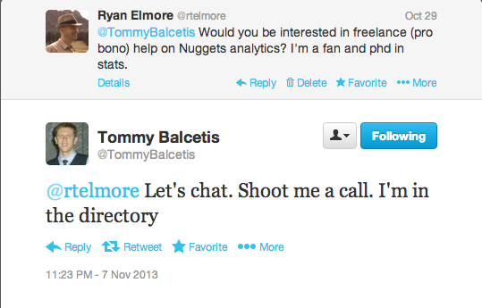
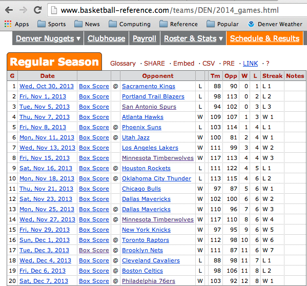
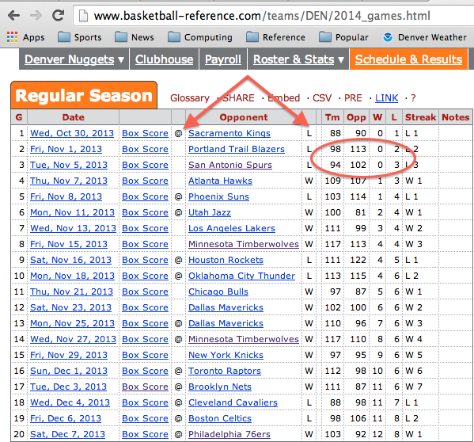
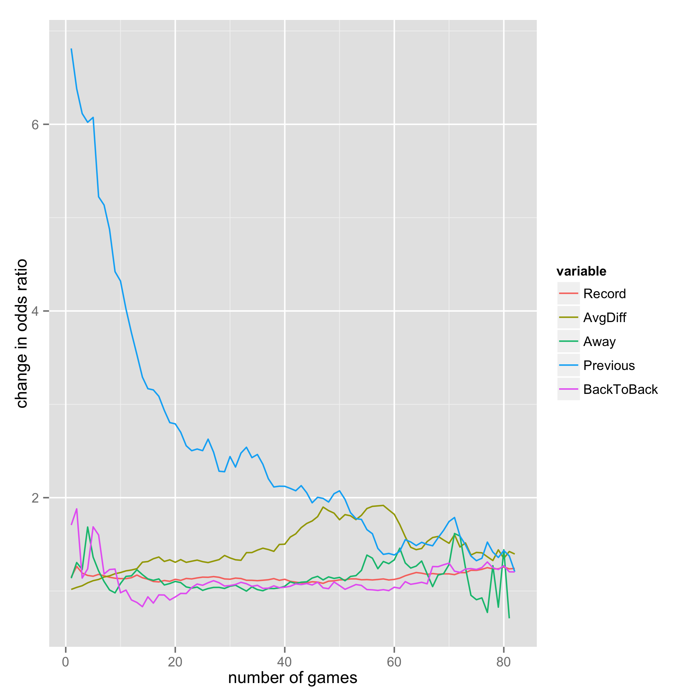
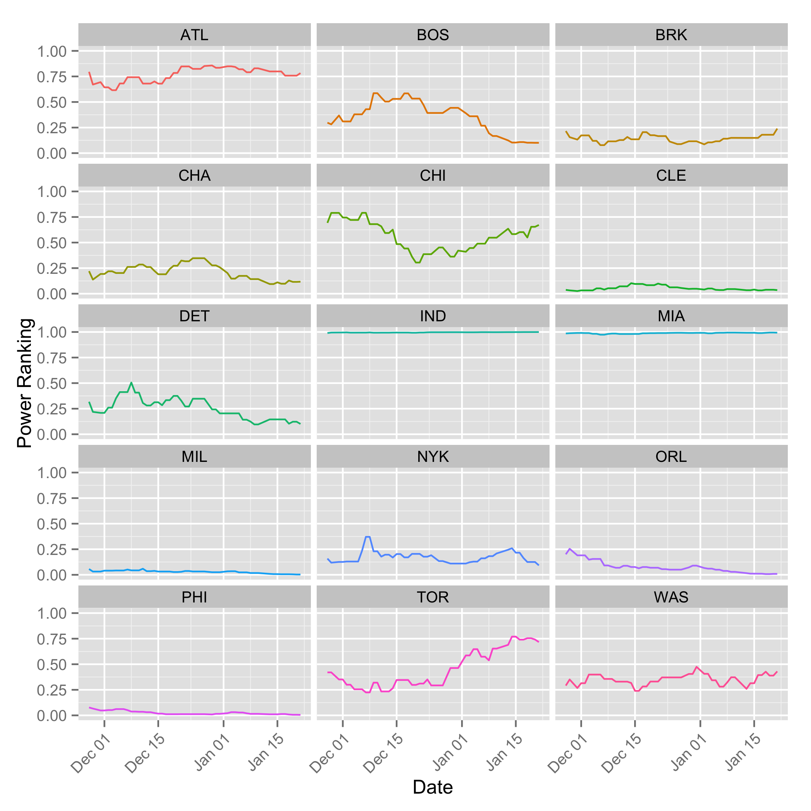
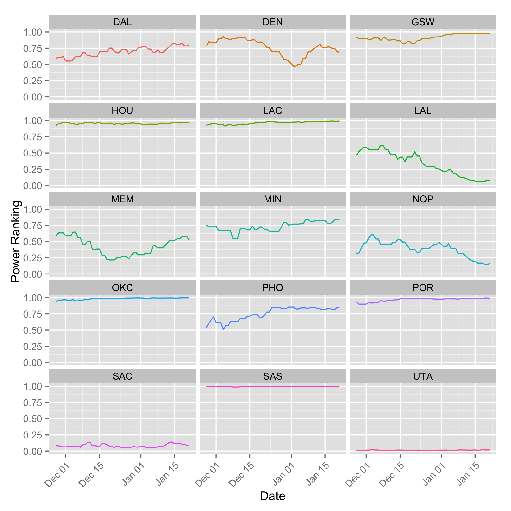
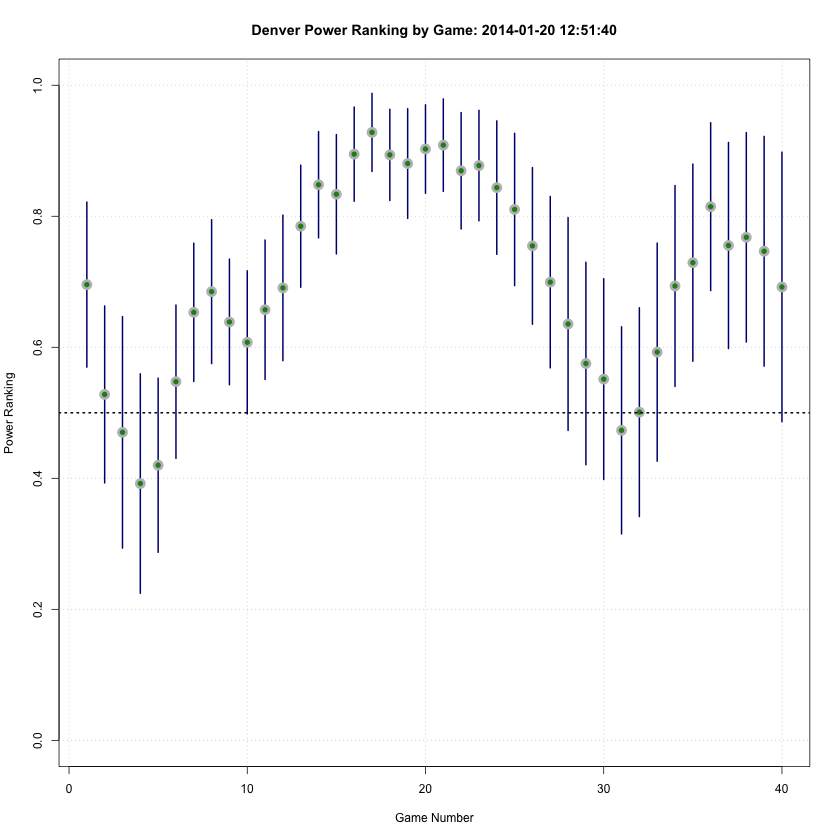
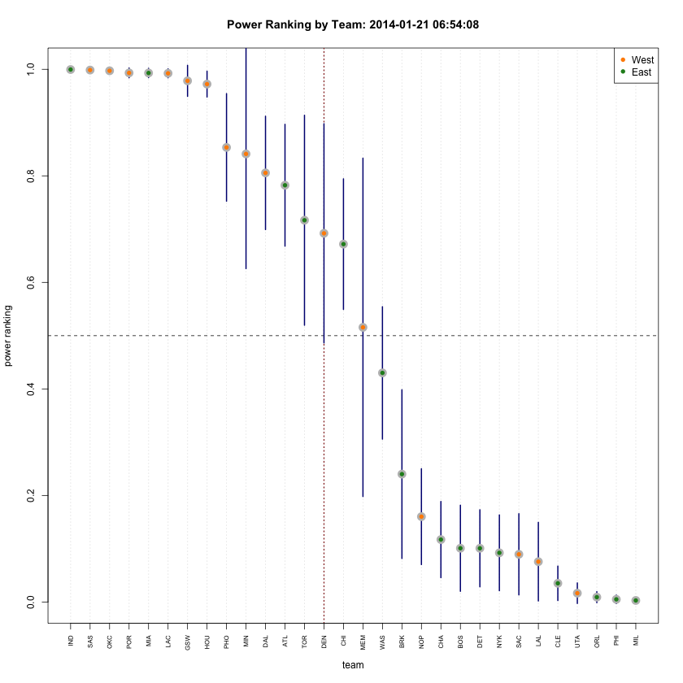
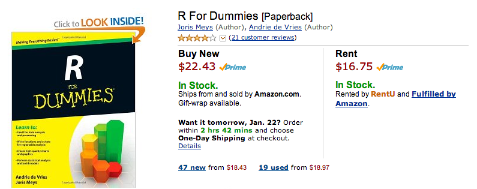

Denver Nuggets:
Will they make the playoffs?
Ryan Elmore / @rtelmore
NREL
It Starts With a Tweet...

So, what's the probability of making the playoffs after 20 games?
Outline
- What are characteristics of playoff teams?
- Scraping Basketball-Reference.com
- Processing the Data in R
- Building and Validating a Model
- A Simple Shiny App
Indicators of Making the Playoffs
- Prior Year Success
- Win/Loss Record
- Cumulative Point Differential
- Strength of Schedule (proxies)
- Away games
- Back to Back games
A Logistic Regression Model
\[\begin{aligned} \log(\frac{p}{1-p}) & = \beta_0 + \beta_1X_1 + \dots + \beta_5X_5 \\ p & = \textrm{probability of making playoffs} \\ X_1 & = \textrm{indicator of previous year playoffs} \\ X_2 & = \textrm{wins - losses} \\ X_3 & = \textrm{average point differential} \\ X_4 & = \textrm{number of away games} \\ X_5 & = \textrm{number of back to back games} \end{aligned} \]
The First Twenty Games

The First Twenty Games

Process a Team's Season (Year)
GetNBASeasonTeamByYear <- function(team, year){
require(XML)
require(lubridate)
html <- paste(.base.api, team, "/", year, "_games.html", sep="")
stats <- readHTMLTable(html)[['teams_games']][c(1, 2, 4:6, 8:12)]
stats <- stats[-c(21, 42, 63, 84), ]
stats[, c(1, 6:9)] <- apply(stats[, c(1, 6:9)], 2, as.numeric)
stats$Diff <- stats$Tm - stats$Opp
stats$AvgDiff <- cumsum(stats$Diff)/stats$G
stats$Away <- cumsum(stats[, 3] == '@')
stats$BackToBack <- c(NA, as.vector(diff(mdy(stats$Date))))
return(stats)
}
Collect Data
for (year in years) {
for (team in teams) {
if (team == "NOH") {
if (year <= 2002) team <- "CHH"
if (year %in% c(2006, 2007)) team <- "NOK"
}
if (team == "OKC") {
if (year <= 2008) team <- "SEA"
}
if (team == 'NJN' & year == 2013) team <- "BRK"
if (team == "CHA" & year <= 2004) team.stats[[index]] <- NULL
else {
print(c(team, year, index))
team.stats[[index]] <- GetNBASeasonTeamByYear(team, year)
}
team.matrix[index, ] <- c(year, team)
index <- index + 1
}
}
Build Models
for (i in 1:length(games)){
for (j in 1:357) {
results.df[j, 1:6] <- ProcessSeasonStatsByGame(team.stats.sub[[j]],
game = games[i])
}
games.glm[[i]] <- glm(Playoffs ~ Record + AvgDiff + Away + Previous + BackToBack,
family = binomial,
data = results.df)
}
Model Coefficients Over Time

Eastern Conference

Western Conference

Nuggets Over Time

League Rankings as of Today

Playoffs?!
- Need to Account for Conference/Division Stuff
- Simulate a Final "Power Ranking"
- Pick Division Winners
- Max of Eight Teams per Conference
- Rinse and Repeat
Simulate the Final Standings
RandomTeamRanking <- function(team){
return(runif(n = 1, min = team[1] - 5*team[2], max = team[1] + 5*team[2]))
}
PlayoffsTheMonteCarloWay <- function(rankings, kSims = 10000){
sim.playoffs <- matrix(NA, nc = 30, nr = kSims)
rankings <- rankings[order(rankings$team), ]
rankings$divison <- c("E", "A", "A", "E", "C", "C", "W", "N", "C", "P", "W", "C",
"P", "P", "W", "E", "C", "N", "W", "A", "N", "E", "A", "P",
"N", "P", "W", "A", "N", "E")
new.ranks <- rankings[, 2:3]
for (sim in 1:kSims){
new.p <- apply(new.ranks, 1, RandomTeamRanking)
new.p[new.p > 1] <- 1
rankings$prob <- new.p
league <- rankings[order(rankings$div, -rankings$prob), ]
playoffs <- league$team[seq(1, 26, by = 5)]
leftovers <- league[!(league$team %in% playoffs), ]
leftovers <- leftovers[ order(leftovers$conf, -leftovers$prob), ]
playoffs <- c(playoffs, leftovers$team[c(1:5, 13:17)])
sim.playoffs[sim, ] <- rankings$team %in% playoffs
}
colnames(sim.playoffs) <- rankings$team
tmp <- apply(sim.playoffs, 2, mean)
tmp2 <- apply(sim.playoffs, 2, sd)
return(data.frame(p = tmp, v = tmp2, conf = rankings$conf, div = rankings$div))
}
Probability of Making Playoffs

Model Validation
set.seed(19838)
kTrials <- 1000
kGames <- 6
results.matrix <- matrix(0, nc = kGames, nr = kTrials)
games <- c(5, 10, 20, 30, 40, 50)
for (g in 1:kGames){
for (j in 1:357) {
results.df[j, 1:6] <- ProcessSeasonStatsByGame(team.stats.sub[[j]], game = games[g])
}
results.glm <- glm(Playoffs ~ Record + AvgDiff + Away + Previous + BackToBack,
family = binomial,
data = results.df)
for (i in 1:kTrials){
index <- rep(F, 357)
index[sample(1:357, size = 250, rep = F)] <- TRUE
results.df.sub <- results.df[index, ]
results.df.test <- results.df[!index, ]
results.glm.sub <- glm(Playoffs ~ Record + AvgDiff + Away + Previous + BackToBack,
family = binomial,
data = results.df.sub)
results.sub.pred <- predict(results.glm.sub,
newdata = results.df.test,
type = "response")
results.matrix[i, g] <- mean((round(results.sub.pred) == results.df.test[, "Playoffs"]), na.rm = T)
}
}
Validation Results
Games 5 10 20 30 40 50
Min. 0.5327 0.6075 0.6916 0.7196 0.7664 0.7664
1st Qu. 0.6636 0.7103 0.7850 0.7944 0.8411 0.8505
Median 0.6916 0.7383 0.8037 0.8131 0.8598 0.8692
Mean 0.6873 0.7392 0.8063 0.8108 0.8622 0.8651
3rd Qu. 0.7103 0.7664 0.8318 0.8318 0.8879 0.8879
Max. 0.7850 0.8598 0.8972 0.9065 0.9533 0.9439
Shiny App
- "Easy web applications in R"
- UI.R
- Sets up slides, figure windows, etc.
- Server.R
- Includes shinyServer object
- Loads glm objects and computes probabilities
- Run the App!
Nothing's Free Folks

Acknowledgements
- Reveal.js was created by Hakim El Hattab / @hakimel
- MathJax
- Damian Wandler for Shiny Help / @dvwandler
- Github Site for this project